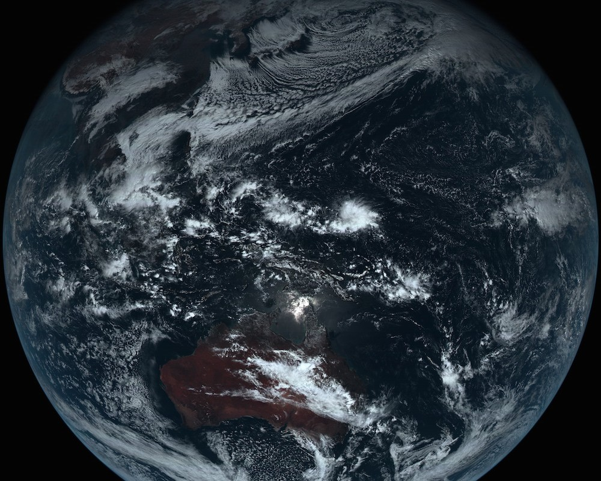
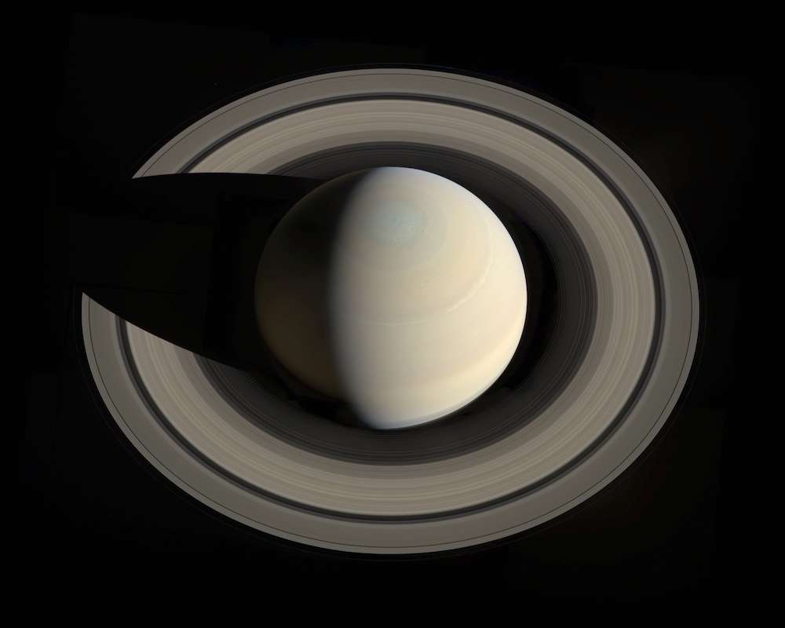
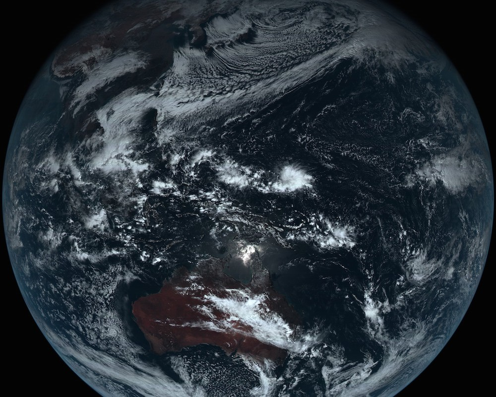
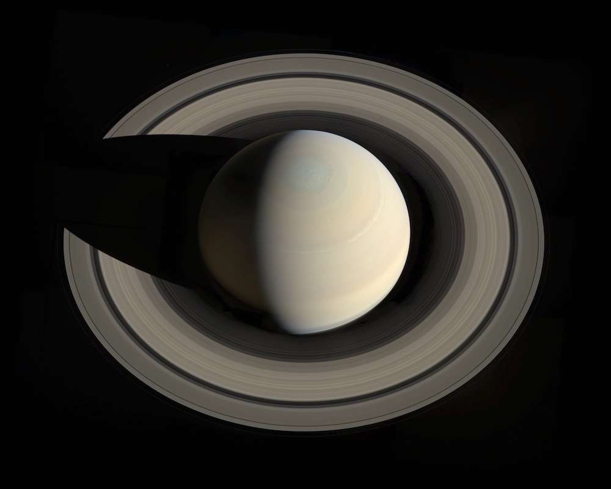

Les planetes
- Les differents criteres pour definir les planetes
La conference qui a eu lieu entre le 14 et le 25 aout 2006 a Prague par les
scientifiques de l'U.I.A avait pour objectif de redefinir les differents elements
constituants du systeme solaire ainsi une planete est un astre qui :
- Est en orbite autour du soleil
Possede une masse suffisante pour que sa gravite l'emporte sur les forces de cohesion
du corps solide et le maintient en equilibre hydrostatique sous une forme presque
spherique.
- A eliminer tout corps susceptible de se deplacer au voisinage de son orbite.
Possede une masse suffisante pour que sa gravite l'emporte sur les forces de cohesion du corps solide et le maintient en equilibre hydrostatique sous une forme presque spherique.
Ainsi au lieu d'avoir 9 planetes dans le systeme solaire, on a plutot 8 planetes car Pluton ne respecte pas la 3eme critere.
Music time :
- La classification des planetes
Au cours de cette conference, les scientifiques ont classe les 8 planetes en 2 groupes :
Les planetes telluriques: Ce sont des planetes qui ont une taille relativement
reduite avec une densite eleve. Elles sont constituees du croute ou ecorce rigide
et un noyau riche en element lourd (Fer, nickel). Ces planetes sont aussi appellees
planetes internes, ce sont les planetes les plus proches du soleil (Mercure, Venus, Terre,
Mars).

Les planetes gazeuses ou joviennes sont constituees de gaz comme l'helium et
l'hydrogene. Elles sont par consequente d'une grande taille et une densite tres
faible. Elles sont aussi planetes externes car elles sont les plus eloignes (Jupiter,
Saturne, Uranus, Neptune).

Les planetes telluriques: Ce sont des planetes qui ont une taille relativement reduite avec une densite eleve. Elles sont constituees du croute ou ecorce rigide et un noyau riche en element lourd (Fer, nickel). Ces planetes sont aussi appellees planetes internes, ce sont les planetes les plus proches du soleil (Mercure, Venus, Terre, Mars).
Les planetes gazeuses ou joviennes sont constituees de gaz comme l'helium et l'hydrogene. Elles sont par consequente d'une grande taille et une densite tres faible. Elles sont aussi planetes externes car elles sont les plus eloignes (Jupiter, Saturne, Uranus, Neptune).
- Les planetes naines
Caracteristique des planetes
Une planete naine est un corps celeste qui :
A une masse suffisante pour que sa gravite l'emporte sur les forces de cohesion du corps solide et le maintienne en equilibre hydraustatique sous une forme presque spherique.
Est en orbite autour du soleil.
N'a pas eliminer tout corps susceptible de se deplacer au voisinage de son orbite.
N'est pas un satellite.
Ex : Ceres, Pluton
Video time: